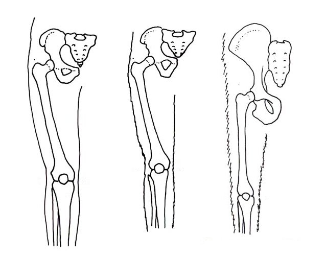

This is a story through millions of years in its past to explain why humans are shaped the way we are, and millennia into the speculative future for why mechs should probably not replicate human geometry.

Well, it starts with our mouth. Early lifeforms were floating around eating whatever happened to come close to their mouths. Not very efficient, so eventually they developed light receptors, which would eventually turn into eyes. Now they can hunt! But, we need some way to process this light information, and signal to the mouth to eat that blob in front of it, so we developed a control centre in between our eyes and our mouth.(Source: Be Smart on youtube)
This is why our brain is in our heads. It evolved as a simple controller to coordinate the action of eating the thing in front of our eyes. These days you might think that sticking the most important part of our body in this random appendage sticking out of our core is a bad idea, but it is too late to move it. Evolution can only build on what was before, not move and change things whole cloth. This is also why our eyes are not as good as they could be. They are fish eyes adapted to work in air, since mammals evolved from fish.
Okay, so that explains why humans have a head sticking out, but why the bipedalism?
The amount of physiological changes required to make bipedalism possible is staggering. Ever wondered why babies are so dumb? Well, it's because our hips are too narrow to push out a smart baby, so we pop 'em out half-baked and let them do the rest of the cooking outside the womb. Why are our hips so narrow? Because they need to be in order to support our bipedalism.
https://australian.museum/learn/science/human-evolution/walking-on-two-legs-bipedalism/
So why did we go through all this effort to develop bipedalism? There are a few hypotheses:
https://humanorigins.si.edu/human-characteristics/walking-upright
Encyclopædia Britannica disputes a few of these:
https://www.britannica.com/science/human-evolution/Theories-of-bipedalism
My personal hypothesis: Chucking things with any degree of accuracy is somewhat unique to humans and is REALLY effective at scaring away even larger predators. Personally, I wonder if chucking rocks at potential predators was another evolutionary pressure towards turning our forelegs into arms and hands.

If you are designing giant mechs for your gritty science-fiction, (or you work at Lockheed Martin and the MIC is even more advanced than I realised), you have the benefit of intelligent design, rather than being stuck with natural selection.
Your mech doesn't need a mouth, and you have optic fiber connections. So you don't need to put the mouth, eyes and command centre in a big vulnerable appendage sticking away from the heavily armoured core. Put the command centre in the centre of its abdomen, and put cameras all over it like a spider.
And what about locomotion? Mammals are stuck with four limbs, so the choice is between Bipedalism, Quadrupedalism (or Pentapedalism if you are a kangaroo). Your robot death machine has no such restriction on the number of limbs. Why would you make your battle robot top-heavy, with a high centre of gravity when you can just add more legs? Four legs and two arms provide greater stability; there is a good reason why the robot companies are making robo-dogs first.
While we are talking about arms, who needs hands anyway? Trying to grip onto something using the pressure of five fingers is not the optimal way of attaching components. Presumably your Mech's main weapon will be a gun of some variety. Surely that can be bolted directly onto the robots "spine" for better stability. Fingers are great for fine motor control, but I cannot think of many cases where a Mech will need to pry open a pistachio in general operation.
Biomimicry is an interesting and often powerful design tool, but certainly isn't the only way to design. The drawbacks of biomimicry only get larger the further you stray from the design constraints from the natural world.

There have been a lot of successes these days on the promise of robo-butlers (there has also been a lot of bullshit from Musk et al.). All my yapping about how bad humanoid geometry is for a giant mech, one may reasonably point out that a robo-butler is just a small mech. Should it be humanoid?
I would say if you think this is a worthwhile use of your time and research budget, then this likely is a good use case for humanoid proportions. If you are trying to make a robot which interfaces with the human world, then giving it similar proportions to the humans we designed our tools for makes sense. Specifically, it is probably a good idea to make it a 180cm, 90kg male-proportioned figure since that is the "average" that so much of our society is built around (not necessarily a good thing).
This makes sense when you think about it; the Boston Dynamics robodogs may be very stable and agile, but no matter how great their design is, they probably won't be able to unpack your dishwasher. A humanoid shape just makes a lot of sense for doing a big list of human-like chores.
Making them humanoid also has the obvious effect of natural anthropomorphizing. With all the issues of AI psychosis we are seeing these days, the drawbacks of this effect are pretty clear. I want to talk about two of the (small) positive effects of anthropomorphizing robots.
The first is it leads to an obvious skeuomorphic-adjacent design (I am using the word incorrectly here, sue me), people intuitively understand how to talk and work with them. Secondly, (and I am stretching credulity by calling this positive), it would likely lead to more pro-social behaviour. There are studies that show even a drawing of eyes on a sign is enough to discourage petty crime since it works its way into the human subconscious and we don't like doing anti-social shit when we are reminded of other people. In a similar way, I would expect people would be less willing to vandalise, commit crimes, be rude etc. in the presence of a humanoid robo-butler, than in the presence of a robo-dog. I would like to stress this is a categorically different argument to saying that more surveillance is a good thing. I am talking about a quirk of human psychology and our response to seeing things which remind us of eyeballs and other people. I am not advocating for more Flock Safety Cameras or other mass surveillance systems.
I had a lot of fun thinking about the differences between design and evolution, and how they interact with human psychology and other factors. If you learnt anything, feel free to send me an email; if you are making art about giant mechs (or non-giant robots), send me that too.
While I was writing this, I got a bit carried away and banged out a rough draft of why giant mechs are probably a bad idea in the first place, so stay tuned for a part 2 post whenever I get round to finishing it. I may also get into the argument between general-purpose robots vs specialised ones later as well.